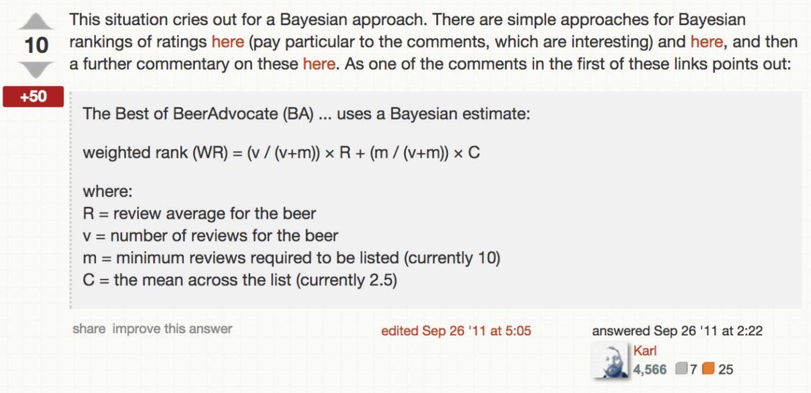
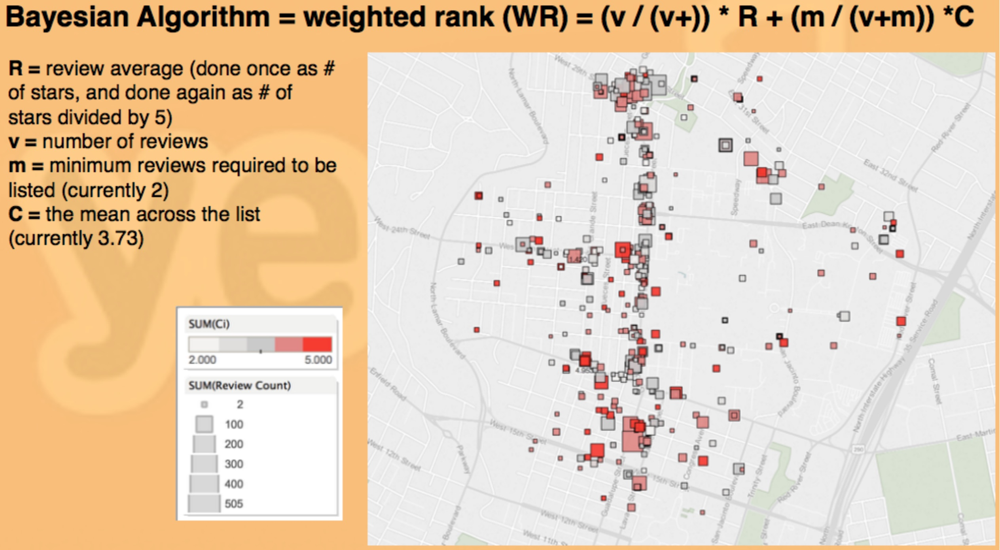

Yelp Academic Dataset
Overview
For Business Intelligence and Analytics (Fall '14) with Prof. Ransbotham, our semester-long group project was tasked with analyzing and making data-based predictions on the Yelp Academic dataset. Below is the portion of the project I worked on that decided how we would implement our own rankings feature for restaurants and attractions.
(disclaimer: I knew nothing about Machine Learning at the time)
Good or Popular?
We needed to determine how to factor both popularity of a restaurant along with its average review to find the [quantitatively speaking] best food in Austin. With 5 possible stars (in 0.5 steps increments) to judge an overall dining experience using a simple upvote formula such as those found on Instagram or Reddit would not work well. Although heavily generalized, the idea there is to take a post-view count and divide it by the number of upvotes to determine how good a post is, but this only works with a binary like or non-like voting system. We have 5 (or 10 really) stars to use to determine how ‘good’ a restaurant is so a search on the web to find some sort of weighted rank to factor this in ended up turning in some great answers.
On Math Stack Exchange an answer showed how to use the Bayesian Approach to determine this sort of weighted rank. We applied this formula to our Yelp data as it was for testing, but then applied some tweaks to the weights to make the results more reasonable for our data. For instance, in one test we did, the popularity of the restaurant did not get enough recognition as 5.00 star average restaurants with under 5 reviews were ranked higher than 4.5 star average restaurants with over 50 reviews. Even after some heavy modification, we struggled to find a system that generalized well for all of our data. It was still clear to us however, that using this rank-based aggregate score based on multiple factors was the right way to approach this. Using R, we computed this data and adjuseted the dataframe to store these new values. Once we had this value computed, we looked for ways to visualize this all in a meaningful way.
Data Visualization
Since we were working with data that so heavily dependent on location, finding a way to present our data with mapping in mind was key. We needed a simple solution to be able to let the valuable lat./long. data show how location can affect rankings. Tableau wound up being the tool we used to get around this. Tableau was incredibly intuitive, and managed to recognize our input .csv file as geographic and defaulted to a map view. To make this visualiation even more telling, we adjusted the parameters of the map to get both the scale of the points and the color temperature of the points to reflect our data properly. The scale ended up showing how many people had reviewed the location and the darker the red of the point was a higher score on the Bayesian weighted rank scale.
